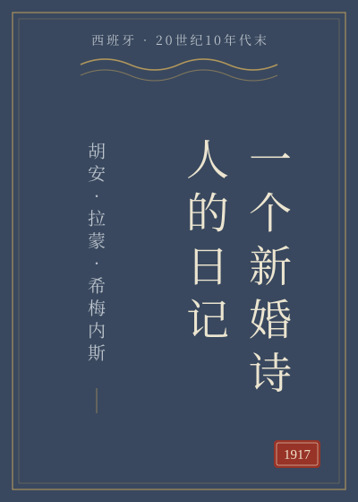
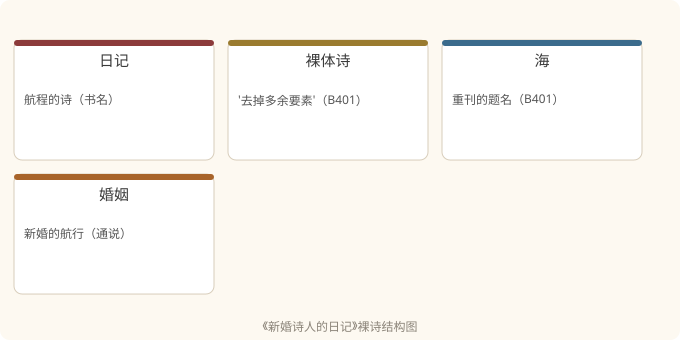

一个新婚诗人的日记
一、基本信息
| 作者 | 胡安·拉蒙·希梅内斯 |
|---|---|
| 成书/出版 | 1917年（Britannica B401：Diario de un poeta recién casado (1917)——1948年重刊为 Diario de un poeta y mar） Juan Ramon Jimenez — Encyclopaedia Britannica（百科全书） |
| 国别/地区 | 西班牙 |
| 时代 | 近代 · 20世纪10年代末 |
| 体裁 | 日记体诗集 |
| 语言 | 西班牙语 |

《新婚诗人的日记》裸诗结构图（主题·结构图）
二、创作背景
Britannica（B401）：Diario de un poeta recién casado (1917)——1948年重刊为 Diario de un poeta y mar——'la poesía desnuda'（裸体诗）的转折——'remove all extraneous elements and write freer, purer verse without formal metres'。
Britannica（B401）：希梅内斯——1956诺奖。
题材（通说待核）：新婚航程（美-西）的日记——'海'的现代诗。
三、内容脉络
（通说待核）'新婚'航程：纽约-加的斯的日记诗。
（通说待核）'裸体诗'的宣言实践（B401）。
四、主要人物表
| 人物 | 身份 | 说明 |
|---|---|---|
| 诗人（'我'） | 新婚航行者 | （B401 语境） |
五、主题与艺术特点
- '裸体诗'的转折（B401：la poesía desnuda）。
- '海'的现代意象（重刊题名——B401）。
- 婚姻与诗（通说待核）。
六、影响与评论
- Britannica：'remove all extraneous elements...'（B401）。
Juan Ramon Jimenez — Encyclopaedia Britannica（百科全书） - Britannica：1956诺奖（B401 交叉）。
Juan Ramon Jimenez — Encyclopaedia Britannica（百科全书）
七、阅读建议
难点
- 日记诗的'裸'语体。
- 纽约现代主义接触（通说待核）。
- 《一个新婚诗人的日记》中译名（《一个新婚诗人的日记》）待核。
- 西班牙文原版（公有领域状态待核）。
希梅内斯转折之作；与《小银和我》对读。
八、待核实
- 1948年重刊题名核对（B401：Diario de un poeta y mar）。
- 1917年出版细节待核。
- '纽约'段细节待核。